標準監督式深度學習（如大型 ResNet、Vision Transformer）依賴於數以萬計標註良好的大規模資料集（如包含 1400 萬張圖片的 ImageNet）。然而在許多真實應用場景中（例如罕見疾病醫療影像診斷、冷門語言語音識別、新工業零件瑕疵檢測），獲取大量標註資料代價極其昂貴甚至不可能實現。
人類具備極強的快速泛化能力 (Rapid Generalization)：一個孩童只需看過一張「斑馬」的照片，就能在動物園中立刻辨認出從未見過的斑馬。少樣本學習 (Few-Shot Learning, FSL) 旨在使機器學習模型具備類似人類的能力，在僅給定極少數（如 1 到 5 個）標註樣本的條件下，快速適應並準確識別全新任務。
若給定樣本數恰好為 1，則稱為單樣本學習 (One-Shot Learning)；若完全沒有標註樣本，僅依賴類別文字描述，則擴展為零樣本學習 (Zero-Shot Learning, ZSL)。
傳統機器學習關注於「在單一任務上學習模型參數」，而元學習 (Meta-Learning) 關注於「跨多個任務學習如何學習 (Learning to Learn)」。元學習模型在訓練階段經歷成千上萬個不同的小任務，從中提取跨任務的通用先驗知識 (Meta-Knowledge)，從而在面對全新未知任務時，只需進行幾步微調或度量比對即可完成高精度預測。
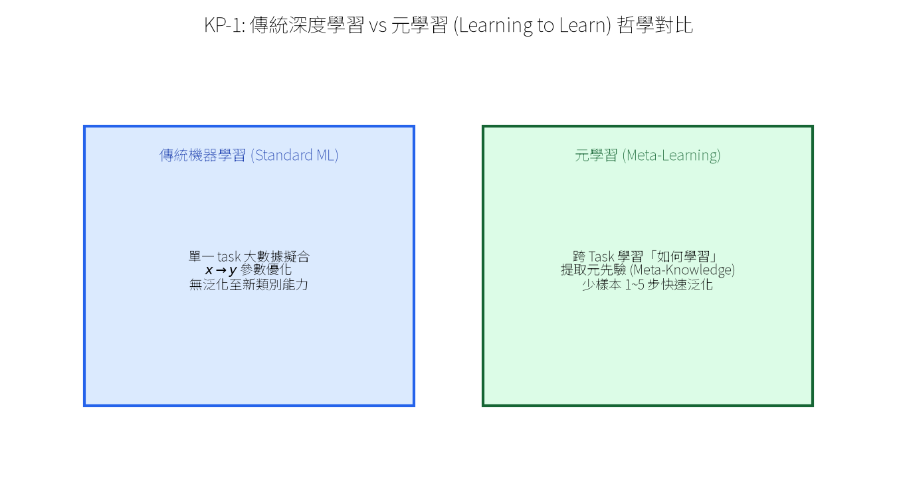
為了使模型學會在少樣本條件下工作，Vinyals 等人提出了劇集式訓練 (Episodic Training) 範式：訓練過程被拆分為許許多多的劇集 (Episodes)，每個 Episode 模擬一次真實的少樣本測試環境。
在每一個 Episode（即一個 Task $\mathcal{T}_i$）中，數據集包含兩個核心集合：
為了防止模型「死記硬背」，元訓練集 (Meta-Training Set) 的類別集合 $\mathcal{C}_{\text{train}}$ 與元測試集 (Meta-Testing Set) 的類別集合 $\mathcal{C}_{\text{test}}$ 必須完全不相交 ($\mathcal{C}_{\text{train}} \cap \mathcal{C}_{\text{test}} = \emptyset$)！這保證了模型在測試階段面對的絕對是全新的未見類別。
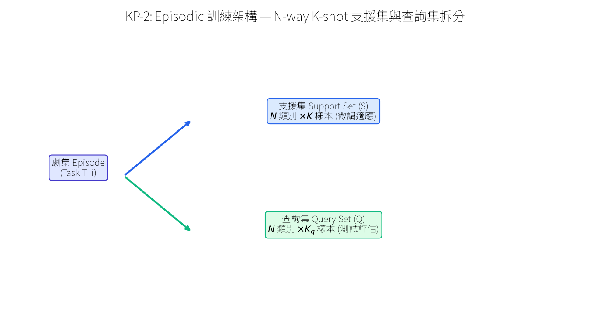
評估少樣本學習演算法標準性能的常用資料集包括：
為了測試模型跨不同視覺領域（如從自然花草跨到手繪草圖）的極限泛化能力，Triantafillou 等人構建了 Meta-Dataset，它整合了 ImageNet, Omniglot, QuickDraw, Aircraft, Birds, Textures 等多個不同來源的資料庫，設定動態變長 $N$-way $K$-shot 任務，成為當前 Few-Shot Learning 最高規格的綜合大考考場。
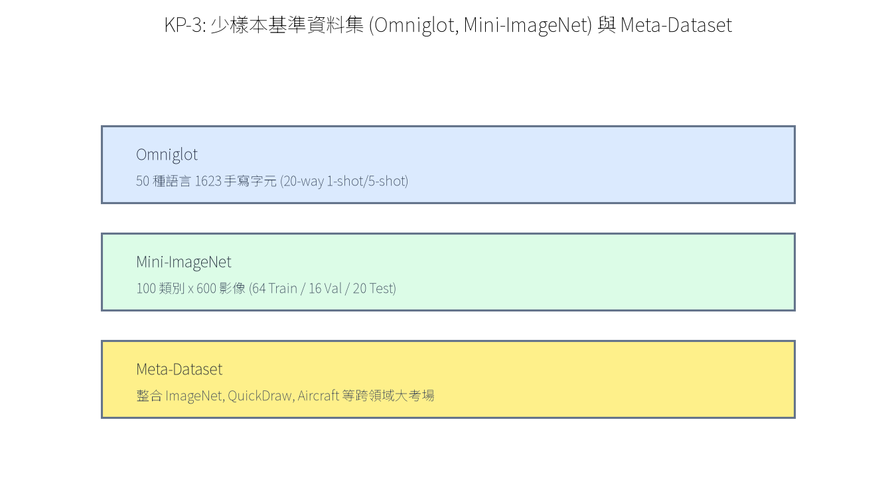
與複雜的元學習劇集訓練不同，非劇集式少樣本學習 採用標準的兩階段遷移學習 (Transfer Learning) 流程：
Chen 等人在 2019 年的開創性工作提出了 Baseline++ 算法，它大幅縮小了傳統遷移學習與複雜元學習之間的差距：
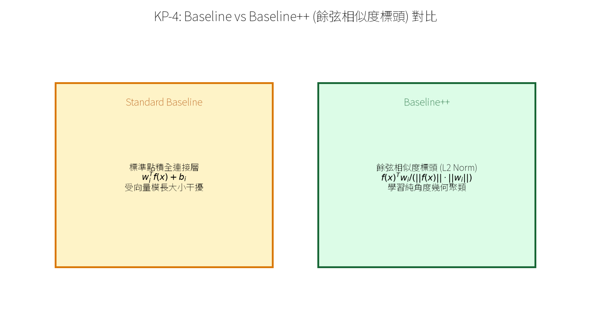
度量元學習的想法非常直觀：學習一個神經網絡特徵映射函數 $f_\theta(\boldsymbol{x})$，將高維圖像映射到低維度量空間。在該空間中，同類別樣本之間的距離極近，異類別樣本之間的距離極遠。預測時只需將 Query 樣本與 Support 樣本進行距離比對即可。
Vinyals 等人在 2016 年提出的 Matching Networks 引入了非參數化的注意力機制 (Attention Mechanism)。對於 Query 樣本 $\boldsymbol{x}^*$，其預測類別 $\ell$ 的條件機率為 Support 樣本標籤的加權組合：
$$\mathbb{P}(y^* = \ell \mid \boldsymbol{x}^*, \mathcal{S}) = \sum_{i=1}^{|\mathcal{S}|} a(\boldsymbol{x}^*, \boldsymbol{x}_i) \cdot \mathbb{I}(y_i = \ell)$$其中注意力權重 $a(\boldsymbol{x}^*, \boldsymbol{x}_i)$ 採用歸一化特徵之間的餘弦相似度 (Cosine Similarity) Softmax：
$$a(\boldsymbol{x}^*, \boldsymbol{x}_i) = \frac{\exp\left( \widehat{f}(\boldsymbol{x}_i)^\top \widehat{f}(\boldsymbol{x}^*) \right)}{\sum_{j=1}^{|\mathcal{S}|} \exp\left( \widehat{f}(\boldsymbol{x}_j)^\top \widehat{f}(\boldsymbol{x}^*) \right)}$$其中 $\widehat{f}(\boldsymbol{x}) = \frac{f(\boldsymbol{x})}{\|f(\boldsymbol{x})\|_2}$ 為單位長度歸一化嵌入。
為了使 Support 樣本與 Query 樣本能夠感知整個集合的全局上下文，Matching Networks 採用雙向 LSTM (Bidirectional LSTM) 與 Readout LSTM 對 $f(\boldsymbol{x})$ 進行增強，產生依賴於全集合的動態嵌入 $\hat{g}(\boldsymbol{x}_i \mid \mathcal{S})$ 與 $f(\boldsymbol{x}^* \mid \mathcal{S})$。
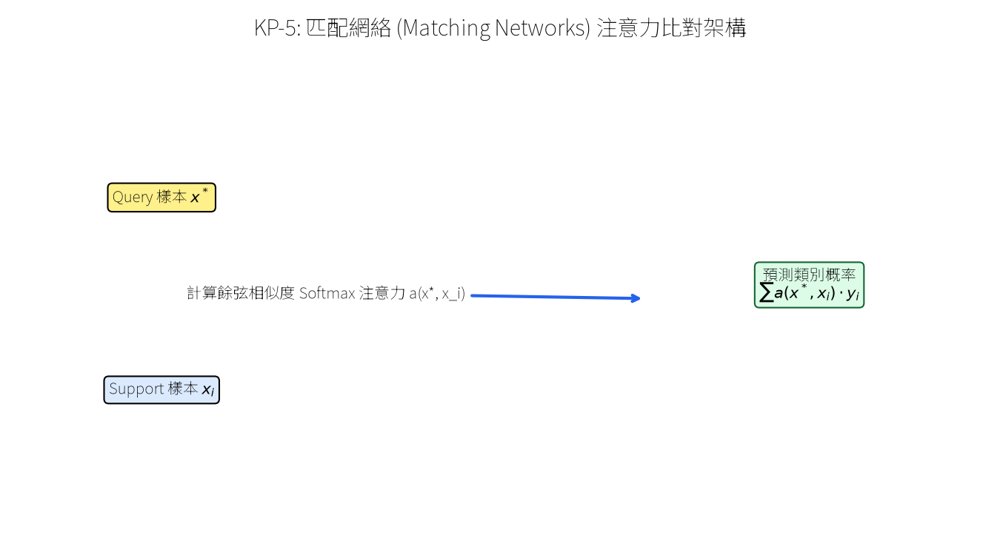
Snell 等人在 2017 年提出的 原型網絡 (Prototypical Networks) 建立在一個極具幾何直覺的假設上：在適當的嵌入空間中，每個類別都可以用一個單一的「原型向量 (Prototype Vector)」來代表。
對於 Support Set $\mathcal{S}$ 中屬於類別 $\ell$ 的所有樣本，其類別原型 $\widetilde{\boldsymbol{f}}_\ell$ 為該類別所有支援樣本特徵嵌入的算術平均值 (Mean Vector)：
$$\widetilde{\boldsymbol{f}}_\ell := \frac{1}{K} \sum_{i \in \mathcal{S}_\ell} f_\theta(\boldsymbol{x}_i)$$其中 $K$ 為 $K$-shot 的樣本數，$\mathcal{S}_\ell$ 為類別 $\ell$ 的支援樣本集合。
對於 Query 樣本 $\boldsymbol{x}^*$，計算其與各類別原型 $\widetilde{\boldsymbol{f}}_\ell$ 之間的平方歐氏距離 $d(\boldsymbol{z}, \boldsymbol{z}') = \|f_\theta(\boldsymbol{x}^*) - \widetilde{\boldsymbol{f}}_\ell\|_2^2$，並通過 Softmax 轉化為類別機率：
$$\mathbb{P}(y^* = \ell \mid \boldsymbol{x}^*, \mathcal{S}) = \frac{\exp\left( -\|f_\theta(\boldsymbol{x}^*) - \widetilde{\boldsymbol{f}}_\ell\|_2^2 \right)}{\sum_{\ell'=1}^N \exp\left( -\|f_\theta(\boldsymbol{x}^*) - \widetilde{\boldsymbol{f}}_{\ell'}\|_2^2 \right)}$$為何使用歐氏距離而非餘弦相似度？ 原論文證明了當使用歐氏距離時，原型網絡等價於在 Bregman 散度下的混合指數族分佈 (Exponential Family) 密度估計，效果顯著優於餘弦相似度！
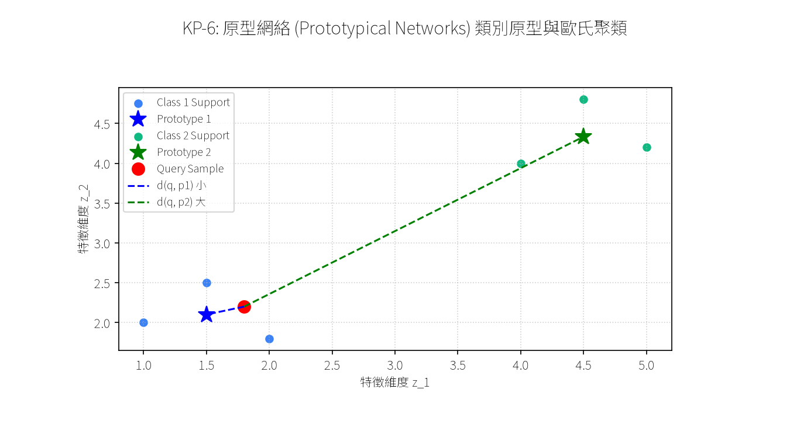
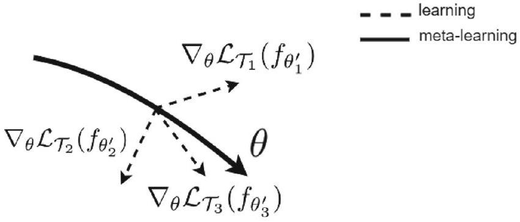
在許多實際場景中，除了極少量的標註 Support 樣本之外，往往還存在大量的未標註樣本集 (Unlabeled Set, $\mathcal{U}$)。Ren 等人在 2018 年提出了 半監督原型網絡 (Semi-Supervised Prototypical Networks)，旨在利用未標註資料精煉類別原型的幾何位置。
半監督原型網絡採用類似 EM (Expectation-Maximization) 演算法的軟指派機制：
若未標註集中包含不屬於 $N$ 個類別中任何一類的干擾雜訊（Outliers），算法引入一個額外的「離群值原型 $\widetilde{\boldsymbol{f}}_{\text{outlier}}$」，自動吸收不匹配樣本，防止其污染類別原型。
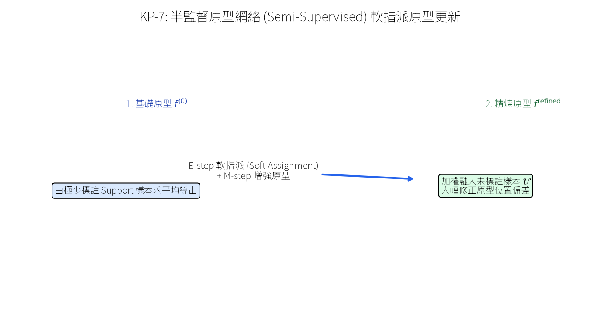
Matching Networks（餘弦相似度）與 Prototypical Networks（歐氏距離）都採用了固定的人為指定幾何距離函數。然而，最適合特定任務的幾何度量空間可能極度複雜且非線性。Sung 等人在 2018 年提出了 關係網絡 (Relation Networks, RN)，用一個可學習的神經網絡 (Relation Module $g_\phi$) 取代固定距離函數。
Relation Network 由兩個神經網絡模組組成：
不同於傳統交叉熵，Relation Network 的目標是讓匹配同類的關係分數接近 1，異類的關係分數接近 0。因此採用 MSE 均方誤差進行端到端優化：
$$\mathcal{L} = \sum_{i=1}^{|\mathcal{S}|} \sum_{j=1}^{|\mathcal{Q}|} \left( d_{i, j} - \mathbb{I}(y_i = y_j^*) \right)^2$$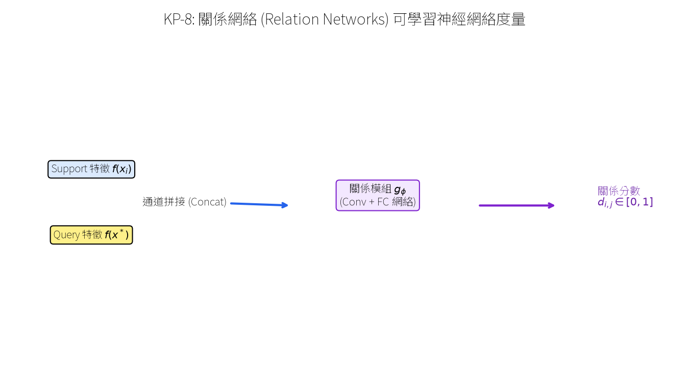
Finn 等人在 2017 年提出的 Model-Agnostic Meta-Learning (MAML) 是元學習領域劃時代的突破。MAML 不限制任何特定模型架構（可用於 CNN、RNN、RL），其核心思想是尋找一組最佳的初始參數 $\boldsymbol{\theta}$，使得模型在面對任何新任務 $\mathcal{T}_i$ 時，只需使用極少量的 Support 樣本進行 1 次或幾次梯度下降（Task-Specific Fine-tuning），就能在該任務上取得極高的準確度！
MAML 採用雙層迴圈更新機制：
外迴圈梯度的鏈式法則展開包含二階導數 (Hessian Matrix)：
$$\nabla_{\boldsymbol{\theta}} \mathcal{L}_{\mathcal{T}_i}^{\mathcal{Q}}(\boldsymbol{\theta}'_i) = \nabla_{\boldsymbol{\theta}'_i} \mathcal{L}_{\mathcal{T}_i}^{\mathcal{Q}}(\boldsymbol{\theta}'_i) \cdot \frac{\partial \boldsymbol{\theta}'_i}{\partial \boldsymbol{\theta}} = \nabla_{\boldsymbol{\theta}'_i} \mathcal{L}_{\mathcal{T}_i}^{\mathcal{Q}}(\boldsymbol{\theta}'_i) \cdot \left( \boldsymbol{I} - \alpha \nabla_{\boldsymbol{\theta}}^2 \mathcal{L}_{\mathcal{T}_i}^{\S}(\boldsymbol{\theta}) \right)$$完整計算 $\nabla_{\boldsymbol{\theta}}^2$ 需要二階向量-Hessian 乘積（計算昂貴）。一階 MAML (FOMAML) 忽略二階項（設 $\frac{\partial \boldsymbol{\theta}'_i}{\partial \boldsymbol{\theta}} \approx \boldsymbol{I}$），直接用 $\nabla_{\boldsymbol{\theta}'_i} \mathcal{L}_{\mathcal{T}_i}^{\mathcal{Q}}(\boldsymbol{\theta}'_i)$ 更新 $\boldsymbol{\theta}$，在大幅節省計算資源的同時保持了優異的性能。
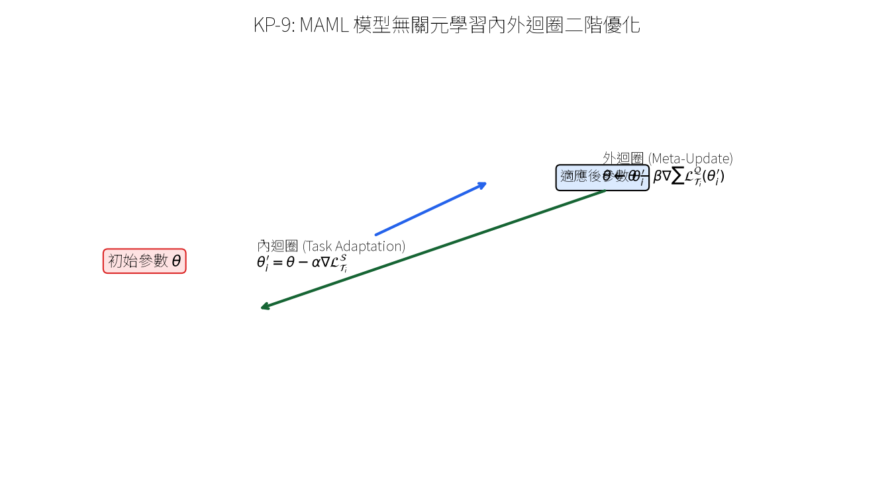
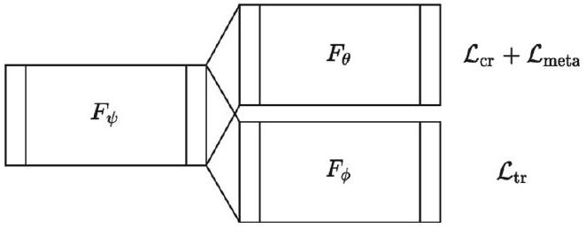
標準 MAML 依賴於標註好的數據集來構建 $N$-way $K$-shot 任務。然而在完全缺乏人工標註資料的情況下，如何進行 MAML 元訓練？Khodadadeh 等人在 2019 年提出了 UMTRA (Unsupervised Meta-Learning via Augmented Random Sampling)。
UMTRA 利用資料增強 (Data Augmentations) 無中生有地構建 Episodic 訓練任務：
將此假任務餵入 MAML 進行標準內外迴圈更新，成功實現了完全不需要任何人工標註的強大元學習！
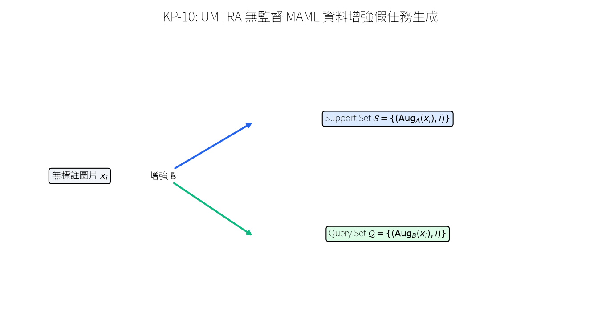
Antoniou 等人在 2019 年的 MAML++ 工作中指出，原始 MAML 存在嚴重的工程不穩定性：
- **痛點一：梯度不穩定與爆炸 (Gradient Instability)**：二階鏈式法則穿過多步內迴圈累積極易引發梯度爆炸。 - **痛點二：內迴圈學習率固定**：所有層、所有梯度步驟共享同一個純量學習率 $\alpha$，無法適應不同網絡層的敏感度。 - **痛點三：批次歸一化 (BatchNorm) 統計量崩潰**：內迴圈更新時 BatchNorm 的 Running Mean/Var 被破壞。 --- ### 2. MAML++ 的核心穩定改進措施 1. **分層分步可學習學習率 (LSLR-MAML / Layer-wise & Step-wise Learning Rates)**： 將單一學習率 $\alpha$ 擴展為與參數維度相同、且隨內迴圈步驟 $k$ 與網絡層 $l$ 獨立的可學習向量 $\boldsymbol{\alpha}_{l, k}$（即 Meta-SGD 思想）： $$\boldsymbol{\theta}_{l, k+1}' = \boldsymbol{\theta}_{l, k}' - \boldsymbol{\alpha}_{l, k} \odot \nabla_{\boldsymbol{\theta}_{l, k}'} \mathcal{L}_{\mathcal{T}_i}^{\mathcal{S}}$$ 2. **多步外迴圈損失累加 (Multi-Step Loss Optimization, MSL)**： 外迴圈損失不只計算最後一步，而是對內迴圈每一步適應後的 Loss 進行加權累加： $$\mathcal{L}_{\text{meta}} = \sum_{k=1}^K v_k \mathcal{L}_{\mathcal{T}_i}^{\mathcal{Q}}(\boldsymbol{\theta}_k')$$ 3. **Per-Step Batch Normalization**：為內迴圈的每一步適應維護獨立的 BatchNorm 統計量。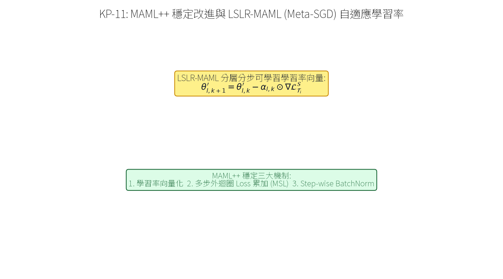
標準 MAML 假設存在單一全局最佳初始點 $\boldsymbol{\theta}$。然而，如果任務分佈非常廣泛且呈現多模態（例如包含圖像分類、語音識別、機器人控制等多種截然不同的任務家族），單一初始點可能位於各任務族的折衷中間，離任何一個族群的真實極小值都非常遠。
Vuorio 等人提出了 Multi-Modal MAML (MM-MAML)，引入一個任務調諧器 (Task Modulator)，根據 Support 集動態預測微調權重，使初始點能「跳躍」至對應任務族的特異初始區域。
Finn, Finn, & Levine 等人提出的 PLATIPUS (Probabilistic MAML) 與 Variational MAML 將元學習擴展為貝氏機率框架。將初始參數與適應後參數看作機率分佈 $p(\boldsymbol{\theta} \mid \mathcal{S})$，透過變分推斷 (Variational Inference) 採樣多元初始化，使得模型在少樣本模糊任務下能夠輸出具備不確定性估算 (Uncertainty Estimation) 的多元預測解！
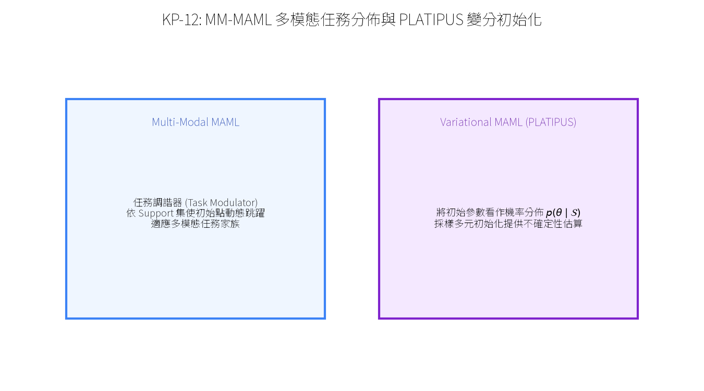
在真實應用中，測試集數據的機率分佈常與訓練集存在領域偏移 (Domain Shift)（例如訓練集全為卡通圖片 $\mathcal{D}_{\text{cartoon}}$，而測試集為真實照片 $\mathcal{D}_{\text{real}}$）。
Dou 等人在 2019 年提出的 MASF (Model-Agnostic Learning of Semantic Features) 將 MAML 的元學習對抗思想引入領域泛化。在訓練時將多個 Source Domains 拆分為 Meta-Train Domains 與 Meta-Test Domains，模擬跨領域適應過渡。
MASF 引入了全局語意對齊損失，利用 KL 散度強迫不同領域中相同類別特徵的後驗機率分佈保持對齊：
$$\mathcal{L}_{\text{global}} = \sum_{\ell=1}^N KLD\left( p_a(y = \ell \mid \boldsymbol{x}^{(a)}) \Big\| p_b(y = \ell \mid \boldsymbol{x}^{(b)}) \right)$$這保證了特徵提取器學到的表徵具備領域不變性 (Domain-Invariant Representations)！
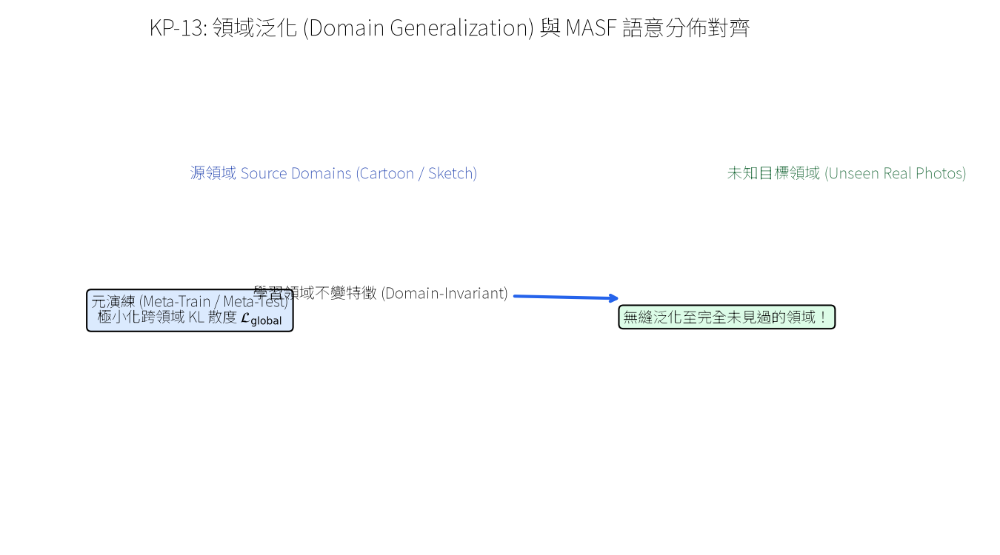
為了確保學到的特徵既具備領域不變性，又具備強大的類別區分力，MASF 結合了兩大核心損失：
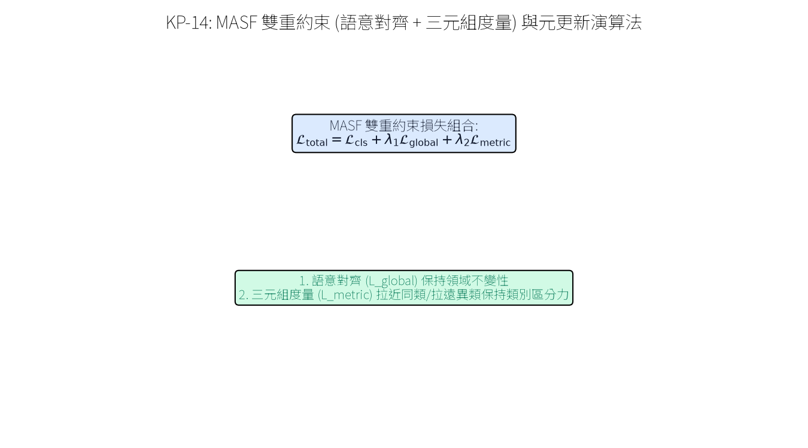